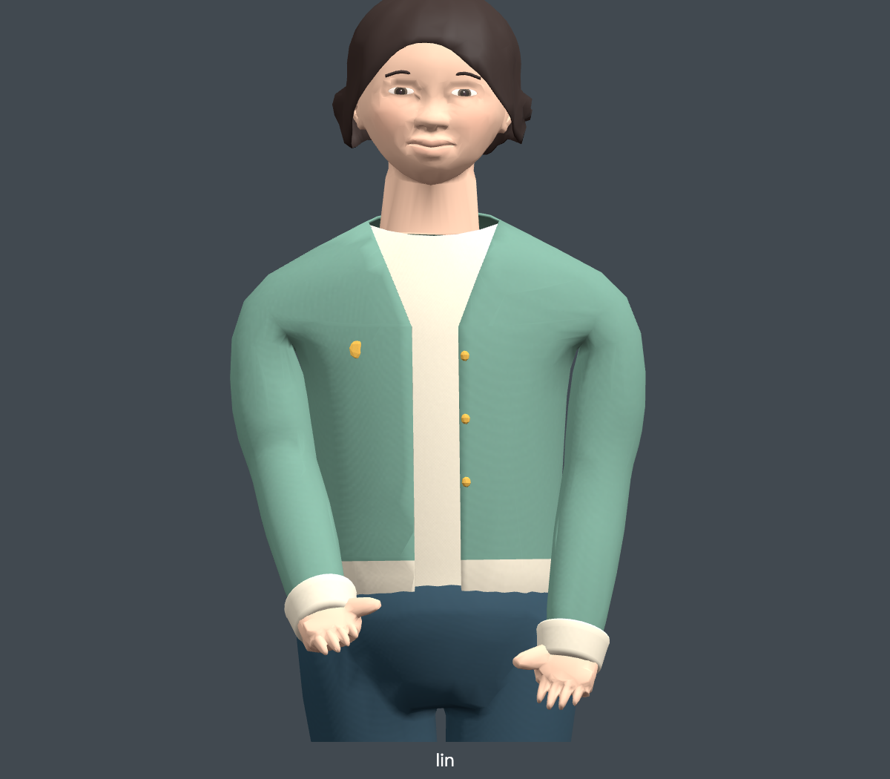
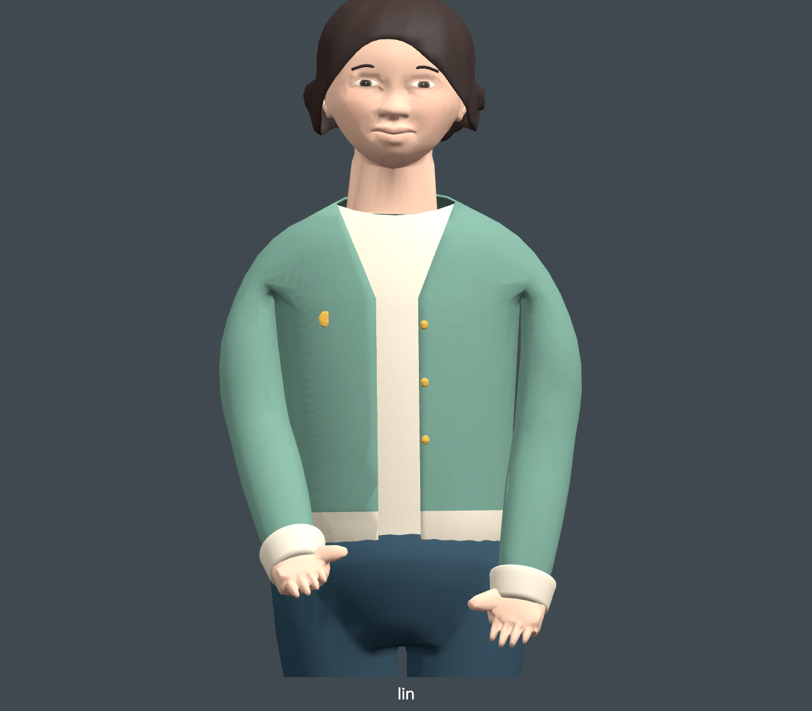
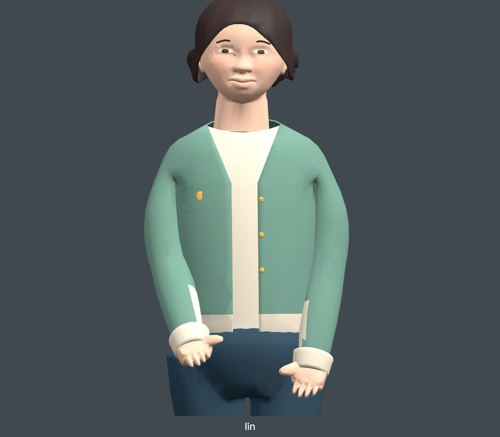
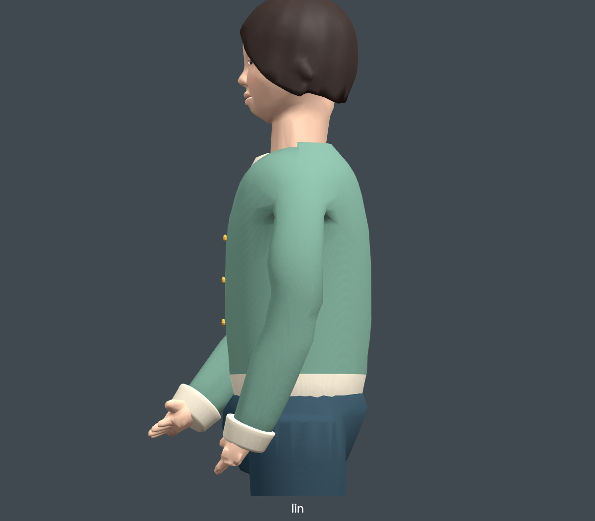
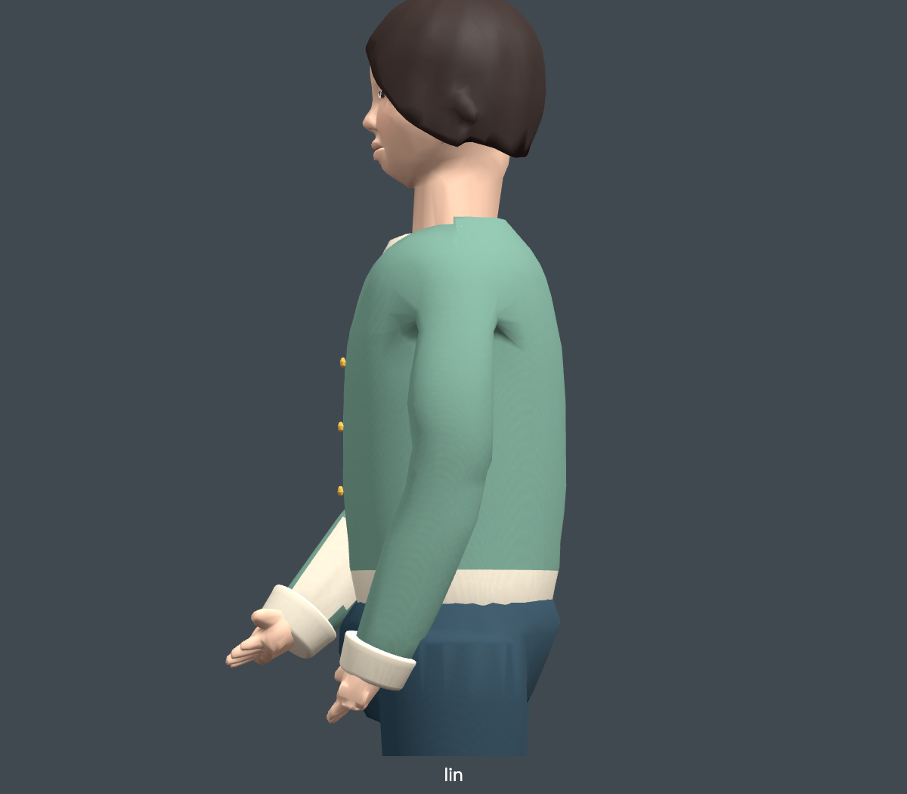
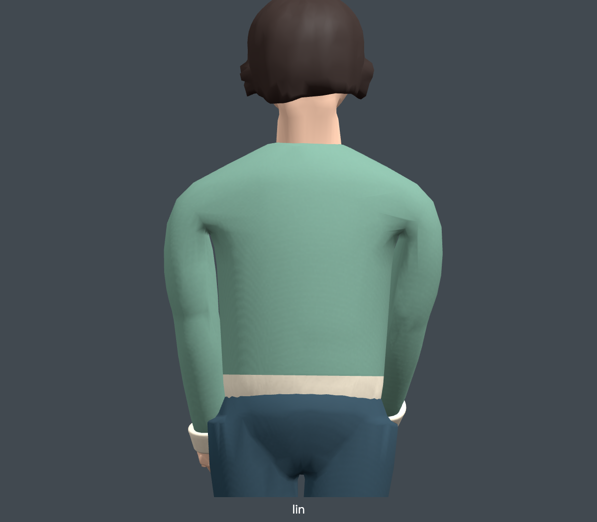
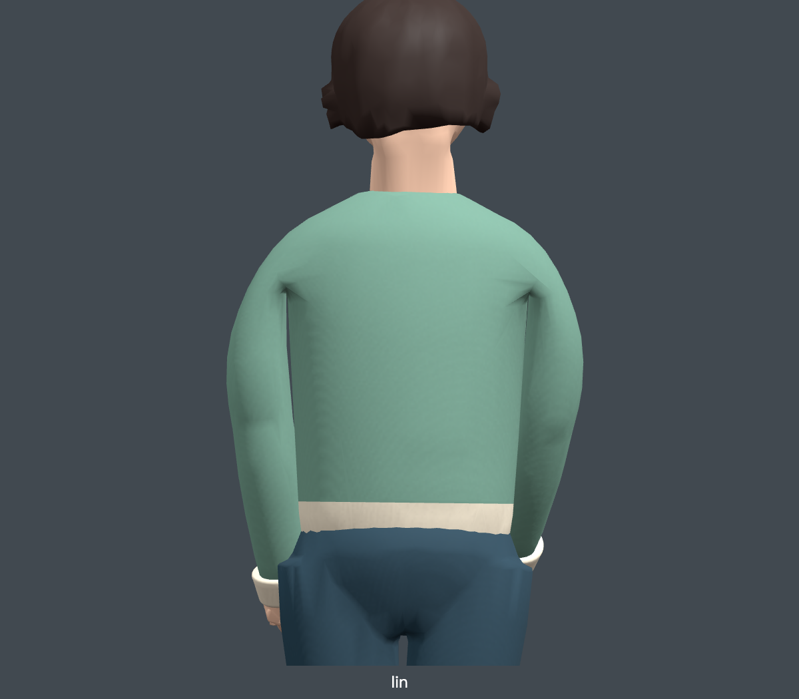
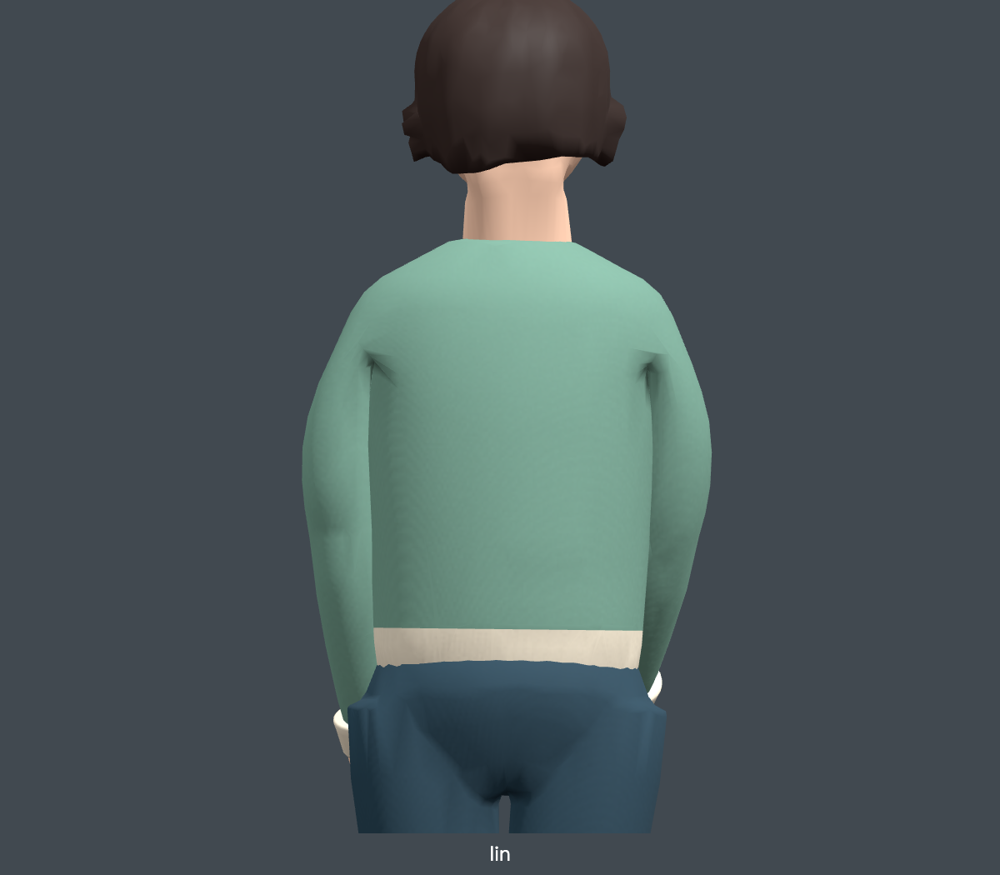
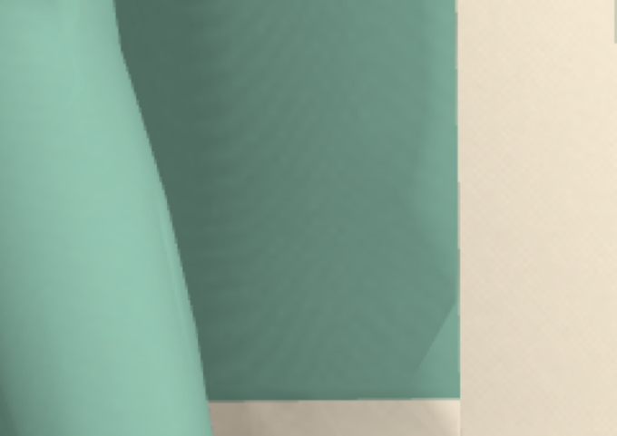
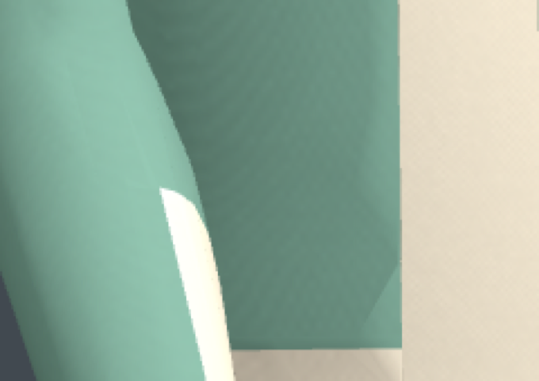

基线 = 当前 HEAD 正式林晓。cap-only 只改袖山截面，pivot-in25mm 同时把肩点内移 25mm。两版都在 tmp/ 隔离目录生成，未进入公开资产。结论：单改袖山是把已知缺陷换成新缺陷；内移肩点是正确方向，但会带出内搭穿透，必须先解决内搭与袖管的间隙。与 肩胸轮廓对照 及 docs/ATRIUM_SHOULDER_STUDY.md、docs/ATRIUM_SLEEVE_CAP_STUDY.md 的既有判决一致。










ATRIUM_RESIDENT_IDS=lin ATRIUM_BUILD_ROOT=tmp/<study> ATRIUM_LIN_SHOULDER_STUDY=1|2 + Blender --python scripts/build-atrium-residents.py，再用 ATRIUM_CAST_CANDIDATE 做单模型替换拍摄。逐张记录见各目录 report.json。